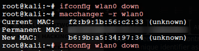

MAC SPOOFING
MAC : Media Access ControlUnique identifier associated to every network interface, ired or wireless. Used to find devices on a physical network.
MAC Spoofing :
Changing a factory assigned MAC address of a network interface on a networked device.
Advantages:
• Free internet
• Identity Protection
• Stop Tracking
ifconfig wlan0 down :first bring down the wlan0
macchanger -r wlan0 :Randomly changes MAC Address
macchanger -m mac_address wlan0 :Changing the MAC to a specific address
ifconfig wlan0 up :Bring up the wlan0
